- 00 开篇词 作为一名互联网人，你为什么必须了解广告产品？.md.html
- 01 业务逻辑：广告产品的前世今生和商业模式是怎样的？.md.html
- 02 业务链条：广告主、媒体、第三方等分别如何看待广告产品？.md.html
- 03 头部玩家：从BAT到跳动的字节，广告产品有哪些变化与发展趋势？.md.html
- 04 产品体系：互联网大厂的广告产品存在哪些共性和区别？.md.html
- 05 变现模式：什么样的产品适合采用广告模式变现？.md.html
- 06 产品路线：大厂和小厂的广告产品发展路线有什么区别？.md.html
- 07 计价与效果（上）：如何制定合理的计价方式？.md.html
- 08 计价与效果（下）：如何制定合理的效果评估指标？.md.html
- 09 效果优化：如何一步步从提升曝光量深入到提升销量？.md.html
- 10 流量优化：如何兼顾广告收入和用户体验？.md.html
- 11 物料生产：如何满足广告主的创意需求？.md.html
- 12 精准定向：如何建立一个成熟的用户标签体系？.md.html
- 13 转化优化：互联网大厂如何利用算法优化广告效果？.md.html
- 14 程序化交易：程序化交易是否可以提升广告效果？.md.html
- 15 需求调研：广告产品潜在需求的调研流程是怎样的？.md.html
- 16 平台建设：如何从0到1建立一个完整的广告产品平台？.md.html
- 17 职业发展：新人入行，如何判断自己是否适合做广告产品？.md.html
- 18 团队建设：如何搭建一个高效的广告产品团队？.md.html
- 19 跨团队合作：产研团队和销售端、媒体端、市场端如何合作？.md.html
- 20 产品运营：不同发展阶段如何制定业务目标和运营策略？.md.html
- 21 广告产品彩蛋：课程答疑与推荐书目.md.html
- 结束语 你想要成为什么样的互联网广告产品人？.md.html
- 捐赠
03 头部玩家：从BAT到跳动的字节，广告产品有哪些变化与发展趋势？
你好，我是郭谊。
在上一讲中我们一起了解了广告产品的业务链条，包括业务链中几个重要角色：广告主、媒体平台、广告代理公司和第三方服务公司的立场和职能。今天我们就来学习一下业务链条中非常重要的一方——媒体平台。
俗话说“擒贼先擒王，打蛇打七寸”，一般来说，我们大部分时间看到的广告还是来自少数几个大的媒体平台。我们分析广告产品的时候，也会首选这些大平台来进行对比。
随着市场的变化，媒体平台也在不断地进行调整，无论是从形式内容上，还是从阵营队伍上，都发生了很大变化。今天我就带你一起来看一下媒体平台中的头部玩家们这些年发生的重要变化，并对今后的发展方向做一个展望。
市场大盘的转变
任何一个市场上，想要有所发展的玩家，都知道天时地利人和缺一不可。如果要想了解广告产品头部玩家的动态、发展历史与未来趋势，首先你需要熟悉整个市场大盘。
被称为“互联网女皇”的美国著名投资家和分析师玛丽·米克尔（Mary Meeker），每年都会发布一篇数百页的互联网趋势报告。我们通过追溯以往的报告数据发现：广告市场在2018年迎来了一个大拐点——在全球范围内，互联网广告的规模首次超过了电视广告。
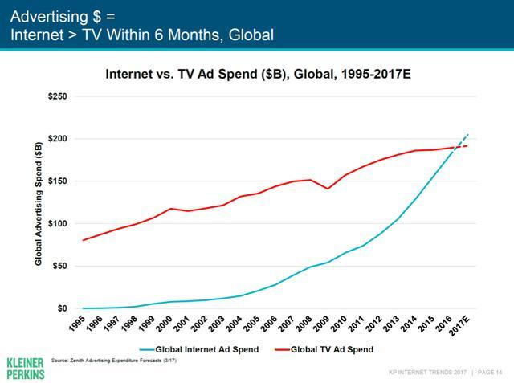
而实际上，在我国广告市场中，这个拐点来得还要更早一些。根据第三方统计显示，早在2014年，中国互联网广告的市场规模已经达到了1574亿元人民币，超越电视，成为了第一大广告媒介。这个拐点背后的重要推力之一，就是用户从PC互联网向移动互联网转移的过程中，中国在互联网产品领域走在了世界前列。
而随着人口红利向移动互联网转移速度的进一步加快，国内广告产品市场的规模也越来越大，到了2021年，已经接近了5500亿元人民币。
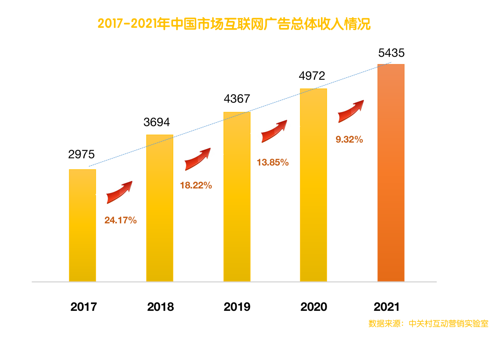
过去十几年中，互联网从PC端向移动端转移的这一趋势，对广告产品市场的头部玩家也产生了非常大的影响。头部玩家也随着市场相应地在发生变化，主要体现在广告媒介的表现形式、用户的互动形式以及内容呈现逻辑这三个方面。下面我们就来依次深入探讨这三方面的变化，首先是广告媒介表现形式方面的变化。
广告媒介表现形式的变化
在PC互联网时代，广告产品的形式主要是以文字链、图片或者图文为主。例如百度搜索结果页出现的很多关键词广告，起初就是文字链广告为主。
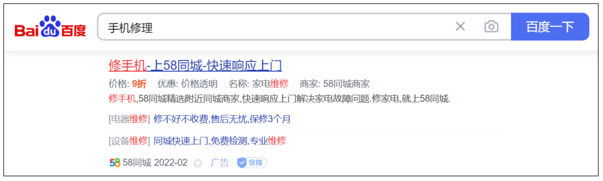
文字链广告的优点是：广告素材文件占用空间少、加载快，在页面上占用的空间也少、位置灵活，可以横排也可以竖排，对用户的干扰也相对较少。所以，在网络条件一般的PC互联网时代的早期，文字链是主要的广告媒介形式。
但是，相比于图片和视频，文字不那么容易从情感上打动用户，所以随着网络空间的扩展和网络传输环境的改善，图片和图文类型的广告越来越多。
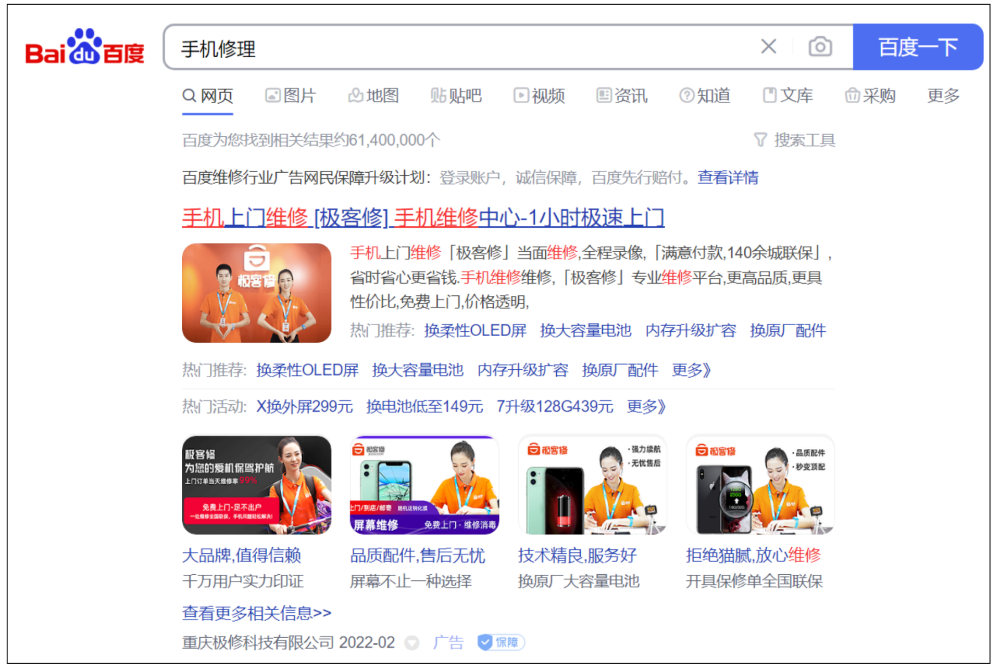
图片更能够在短时间内吸引用户的注意力。因此，出现了很多图片比例较大的广告形式，我们前面讲过的富媒体也有了广泛的应用，例如百度品牌专区广告的很多样式。
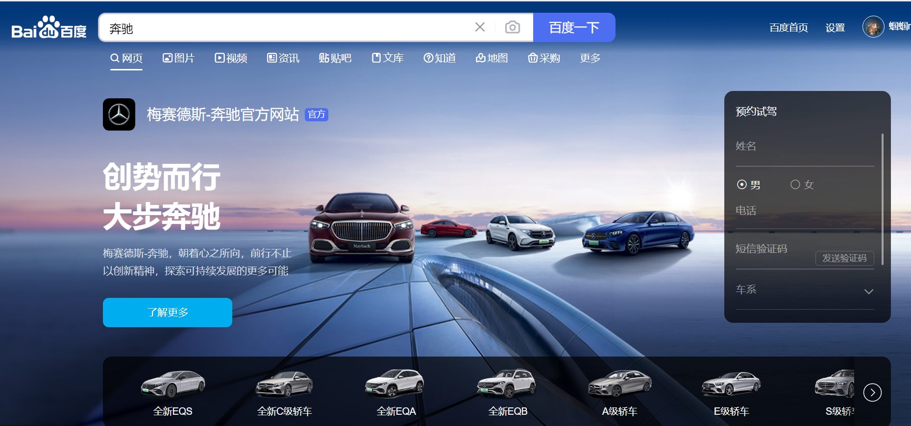
逻辑上来说，图片比文字更容易在短时间内吸引用户。但相比于图片，视频信息维度也更加丰富，更能吸引用户的注意力。因为图片是2D的，而视频在图片的基础上增加了一个时间维度。但是在PC互联网时代，视频形式只是集中体现在像优酷、土豆、爱奇艺、腾讯视频这样的视频网站中，以及一些特殊样式的大尺寸广告中。因为即使上网终端进化到了轻薄型笔记本，我们也不可能随时携带。
到了移动互联网时代，我们终于有了智能手机这样可以随身携带的上网终端。所以，视频广告快速兴起。我们随机抽取了2021年1月到6月第三方数据统计软件Questmobile的数据，如右侧曲线图所示，比起图文，视频广告已经占据了明显的优势。
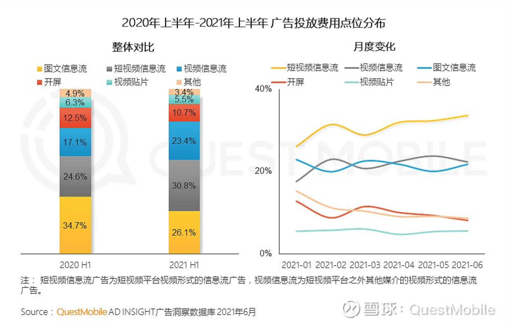
从这些数据中，我们还发现：同样是视频，短视频在广告媒介形式中出现的比例已经远远高于中长视频。一般来说，我们把1分钟以下时长的视频称为短视频，1分钟以上到30分钟时长的视频称为中视频，30分钟时长以上的视频称为长视频。
那么，为什么在所有视频形式的广告中，短视频的比例会超过中长视频呢？
这背后涉及用户心智的底层结构，以及用户注意力在移动互联网时代的变化。一方面，按照神经生物学的理论，用户最开始是通过视觉、听觉等感官系统接触广告，引起感觉记忆的注意后才会进入短时记忆，短时记忆会自动向长时记忆进行传递。短时记忆能够存储的信息容量非常小，所以有效的短视频比起中长视频，在记忆的传递环节上无疑更加高效。
另一方面，因为在智能手机上，我们的注意力会被各种不同的App吸引，所以相比于在电脑上长时间专注于网页的场景而言，我们集中注意力的时间也变得越来越短暂了。我们期待在短时间内吸收更多信息，或者短时间内，在不同的信息之间进行切换。所以，广告也需要在短时间内给予我们更集中的刺激，才能让我们留下印象乃至产生购买行为。
基于以上这些原因，在移动互联网和智能手机时代，短视频广告成为广告媒介形式的主流。这也让字节跳动打破了百度、阿里巴巴、腾讯三家一统天下的局面。根据第三方统计数据，2021年字节跳动在我国互联网广告市场中的地位，已经超过了腾讯和百度，仅次于阿里巴巴，而且和2020年相比，目前仍有上升趋势。这就源自移动互联网和短视频双重红利的加持。
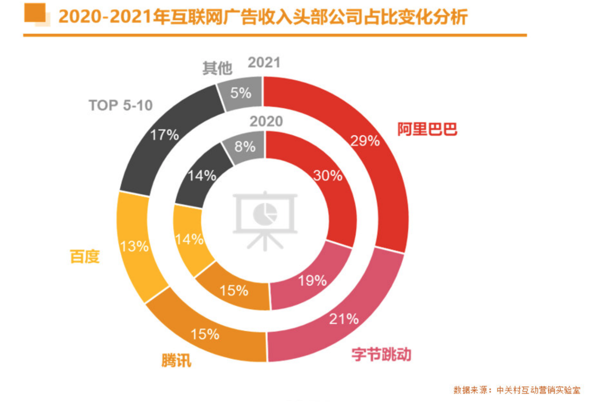
当然，这种头部玩家的变化，不光在广告产品的媒介形式上有具体表现，在广告和用户之间的互动形式上也有明显的体现。
用户互动模式的变化
要了解广告头部玩家用户互动模式的变化，我们首先要对Web 1.0、Web 2.0、Web 3.0的概念有所了解。- 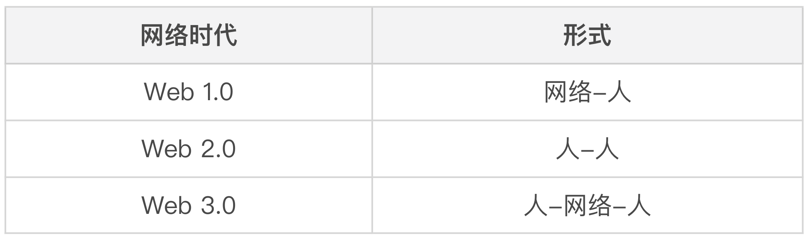
Web 1.0：单向信息，只读；- Web 2.0：以网络为渠道进行人际沟通；- Web 3.0：人工智能、关联数据和语义网络构建，形成人和网络以及网络与人之间的沟通。
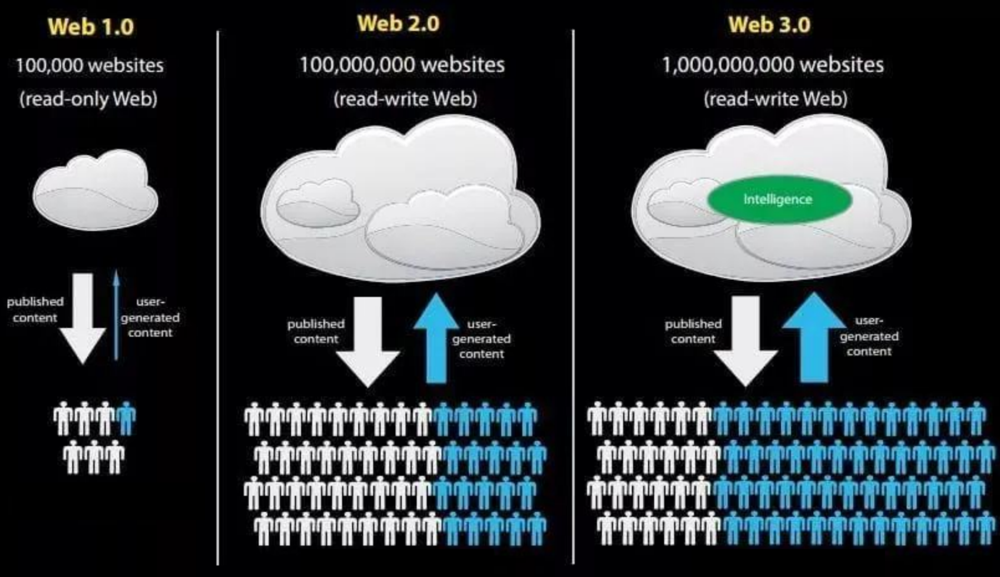
在PC互联网早期，也就是Web 1.0时代，用户对于广告内容只是被动接受信息。这个时期广告产品的头部玩家主要分为以下几类：
- 搜索引擎：例如百度、谷歌、搜狗等，根据用户输入的关键词给出结果，内容的排序结果是由搜索引擎平台决定的；
- 门户网站：例如新浪、搜狐、腾讯网等通用门户网站，还有凤凰网、汽车之家等垂直门户网站，网站平台向用户展现由广告主和平台沟通后的广告；
- 视频网站：优酷、土豆、爱奇艺、腾讯视频等，网站平台在版权内容前、中、后展现贴片、角标等各种形式的视频广告。
这些头部玩家都以Web 1.0为主要的用户互动形式。随着PC互联网时代网站与网页的增加，单个门户网站的份额有所下降，而百度作为通用搜索引擎成为用户流量的大收口，搜索引擎广告的重要性随之上升。
Web 2.0的用户互动形式是随着UGC（用户生成内容）和社交网站及应用的诞生而兴起的，横跨了PC互联网时代和移动互联网时代。进入Web 2.0时代崛起的头部玩家包括：
社交类网站和App：例如微博、微信、陌陌等，像微信的朋友圈广告，用户可以点赞、评论，对于不感兴趣的广告内容也可以点击选择不再显示，是一种典型的Web 2.0式的广告；-
UGC型网站和App：例如哔哩哔哩、抖音、快手等。这些平台的内容都是用户原创的内容，带有很强的社交属性。这类平台上的视频广告与Web 1.0类型的视频广告的主要区别在于：非版权内容中不能插入广告。所以哔哩哔哩的广告多出现在视频内容框之外的页面上其他位置。而抖音的广告经常夹杂在用户短视频中，并且设计成了与用户产出内容相同的形式，用户可以进行点赞、评论、转发、关注等互动操作；
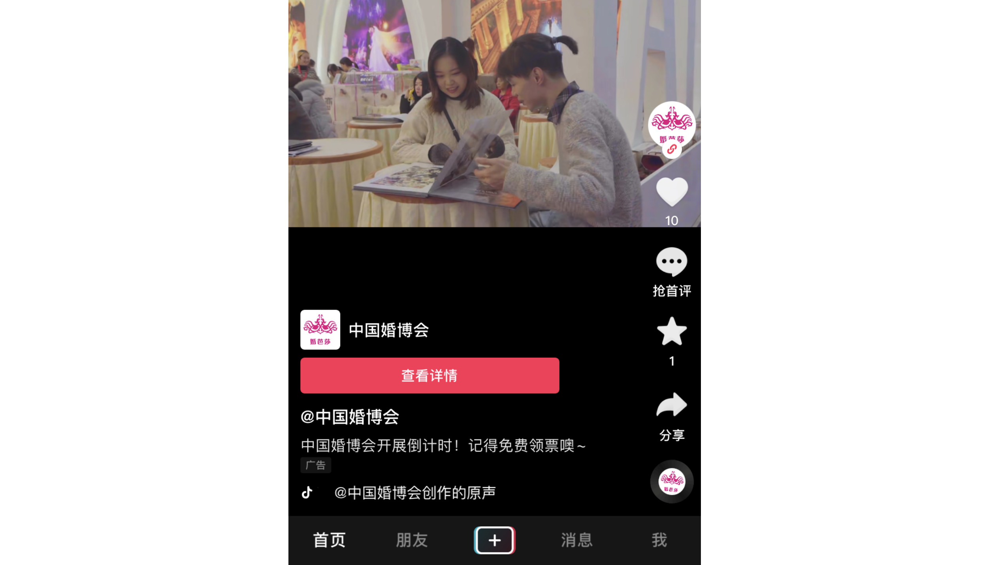
- 电商等完全在线完成用户购买与服务闭环的网站与应用：例如淘宝、美团等，电商的用户互动方式是用户浏览电商平台，挑选商品，加入购物车或者直接下单，完成线上支付，电商平台或者入驻商家生成订单并安排发货。这些平台目前已经继电商佣金之后，采用广告产品作为新的商业化变现手段。
在这一过程中，百度搜索广告这种Web 1.0单向用户互动类型的广告产品的重要性大大降低了。虽然在从PC互联网向移动互联网过渡的这段时间内，谈起互联网广告产品，百度还是和腾讯、阿里巴巴并列前三，但是业内人士已经将眼光投向了更具新特征的广告产品。
Web 3.0作为一个概念，目前业界对其还是众说纷纭，所以我们暂且不对其单独做展开式的诠释和过度联想。我们关注的重点是一些更加具体的趋势。
内容呈现逻辑的变化
广告产品头部玩家内容呈现逻辑的变化，从千人一面逐渐发展到千人千面。在Web 1.0和Web 2.0的早期，广告产品在向用户投放时，主要采取的还是传统广告的形式，例如电视广告。向所有用户呈现统一的品牌和产品信息，通过某个时间段内的多次展现，吸引用户的注意力，进而引起用户的好感，让用户产生购买行为。
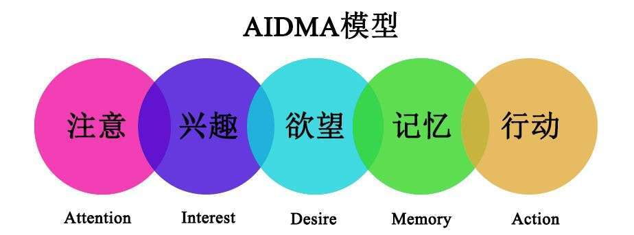
随着用户互动行为与数据的增加，互联网广告产品也渐渐倾向于类似内容型产品的个性化推荐。与之相对的“精准定向”广告其实早已出现，但是直到移动互联网时代，它才渐渐发挥出了它的威力。这是什么原因呢？
- 用户终端的变化：智能手机相对于PC，更容易收集到用户的各种碎片化行为，像用户位置这样的信息，都可以作为区域定位的数据来使用。
- 头部玩家的数据及其应用积累：例如腾讯拥有微信、QQ两大强账号体系，即使用户换了手机，也可以很容易地对同一批ID进行持续的数据收集，还可以结合腾讯系的一大批头部App的用户数据改进用户建模；阿里则可以通过用户的电商购买数据，了解到用户对于不同类型商品的偏好与兴趣；字节跳动的今日头条App则可以了解到用户对于内容上的兴趣，推出类似个性化新闻资讯的信息流广告，而抖音现在除了App，还开发了电商、支付、本地生活等领域的服务，可以获取用户多个维度上的行为数据。
- 互联网数据应用技术的综合发展：例如广告效果数据监控与追踪技术、动态广告创意、人群拓展、数据管理平台等等，都为精准定向广告的落地与发展打下了良好的基础。
精准定向广告可以实现为不同的用户推送不同的广告，从而提高广告投放效果，也能更好地兼顾用户体验。如果你想要进一步了解精准定向广告的具体信息，可以继续关注专栏，我们将在第11讲深入展开讨论。
就像之前提到的，只有拥有海量用户的平台才能积累大量的、长期的、多维度的用户行为数据，所以头部玩家都拥有海量的用户数据。同时，由于这种数据的积累和应用具备马太效应（强者越强，弱者越弱），所以目前互联网广告市场的头部效应和以前相比更加明显，阿里巴巴、字节跳动、腾讯、百度这四家占有了超过75%的中国互联网广告市场的份额。
那么，目前的这些头部玩家是否能够在未来保住它们的既有优势呢？
未来发展趋势
从互联网广告产品短暂而辉煌的发展历史来看，头部玩家的变迁是很迅速的，随着网络和用户终端的改变，头部玩家可能在短短不到10年的时间内就能完成一轮大换血。这样的速度在未来不会停滞，只会加快。
从现状来看，关于未来广告产品头部玩家的趋势，我们要注意以下几点：
- 广告市场大盘的头部效应仍会持续：未来的广告市场会更加依靠数据和技术及其应用，所以拥有大数据的少量头部玩家占据大部分市场份额的情况将长期存在。
- 广告产品的媒介终端由智能手机+移动互联网拓展到车联网、物联网：随着5G、智能硬件、智能座舱等技术与应用的发展，目前的移动互联网的红利会向车联网、物联网转移，智能手机不再是唯一的主要终端，所以，有很大可能会出现新的头部玩家。
- 广告产品的媒介形式会有新的变革：因为媒介终端和互联网技术的进化，所以媒介形式也会从视频继续进化。从过往经验看，虚拟现实（包括AR增强现实/VR虚拟现实/MR混合虚拟现实等）的相关应用是最有可能的，最新的元宇宙概念的落地与应用也要予以关注。
- 广告产品的用户互动形式会进一步进化：随着媒介终端和媒介形式的革新，用户的操作也将不再局限于手部动作，会出现更多身体部位的互动，也会诞生很多新的、有趣的互动玩法，广告会和用户的生活联系地更加紧密。
- 广告产品的内容呈现逻辑可能会出现混合的趋势：精准定向广告在未来相当长的一段时间内依然是主流，所以数据、策略、建模、算法依然是很重要的改进方向。但是随着内容合规和用户数据隐私保护意识的普及，以及相关法规政策的出台，未来有关部门和用户个人对于内容呈现都会有很多的掌控权，用户将拥有更多的自主权，选择是否接受需要使用用户数据的精准定向广告。
重点回顾
今天我们从广告产品的市场发展趋势入手，深入探究了目前广告产品头部玩家的变化和今后的发展趋势。在移动互联网逐渐取代PC互联网的过程中，企业不断调整战略，适应目前市场的变化，抢占头部位置。目前四家互联网巨头占据了75%以上的市场份额，吃尽了移动互联网的红利。在这一过程中，广告产品也在悄然地发生着变化：
- 广告产品的媒介形式从图文向视频尤其是短视频转移，未来短视频还会占据相当时期的优势，但是随着新的媒介终端（例如汽车座舱、智能家居、智能硬件等）的出现，会出现新的媒介形式；
- 广告产品会越来越强调用户互动，这是由媒介终端和移动互联网的变化导致的；
- 广告产品的内容呈现逻辑在未来相当长时间内会继续强调精准互动、千人千面，但未来用户对于数据的被使用和是否接受精准广告，会有更多的自主意识和选择权。-

如果用一句话来说，就是我们从头部玩家的变迁上，既要看到目前和未来一段时间内的发展趋势，也要对新的媒介终端和技术发展保持关注，因为广告产品的头部玩家变动是非常频繁和迅速的，对于任何巨头都时刻存在着新的挑战。
实战演练
根据本节课的内容，请你大胆想象一下，未来哪些企业有可能会成为广告产品市场新的头部玩家，并给出你的理由和依据。
你可以在留言区写下你的答案和我讨论，也期待你能将这节课分享给有需要的朋友，我们下节课再见！
© 2019 - 2023 Liangliang Lee. Powered by gin and hexo-theme-book.